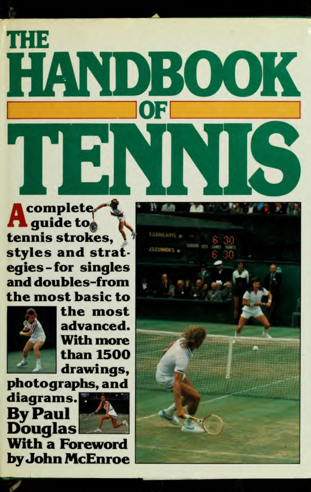
Bách khoa toàn thư kỹ thuật và chiến thuật quần vợt hoàn chỉnh nhất của chuyên gia Paul Douglas
Lời Tựa Của John McEnroe & Lịch Sử Quần Vợt
Foreword by John McEnroe & Historical Evolution of Tennis
Lời Tựa Độc Quyền Của Huyền Thoại John McEnroe
Tôi gặp Paul Douglas lần đầu tiên tại giải vô địch Wimbledon năm 1981 và lập tức bị ấn tượng sâu sắc bởi triết lý huấn luyện của ông. Phương pháp của Paul Douglas chinh phục tôi vì hai lý do cốt lõi: Một là, ông luôn nhấn mạnh tầm quan trọng của việc đặt nền móng kỹ thuật căn bản thật vững chắc và chuẩn xác. Hai là, thay vì biến học viên thành những cỗ máy vô hồn, ông khuyến khích người chơi sử dụng kỹ thuật chuẩn mực để giải phóng và phát triển phong cách tự nhiên của riêng mình. Rất nhiều tay vợt tiềm năng đã không thể vươn tới đỉnh cao chỉ vì họ bị gò ép thi đấu như những người máy và không được phép chơi theo bản năng tự nhiên. Trong cuốn sách toàn diện tuyệt vời này, Paul Douglas đã hệ thống hóa toàn bộ phương pháp giảng dạy của mình. Tôi thực sự tin rằng tác phẩm này sẽ giúp mọi tay vợt ở mọi cấp độ nâng tầm trình độ của mình một cách ngoạn mục. Đối với những bạn trẻ không có điều kiện tiếp cận với huấn luyện viên chuyên nghiệp hàng ngày, "The Handbook of Tennis" chính là người thầy vĩ đại nhất thay thế cho điều đó.
Nguồn Gốc & Sự Tiến Hóa Của Quần Vợt Hiện Đại
Mặc dù tiền thân của môn thể thao này đã tồn tại qua hàng trăm năm dưới dạng "quần vợt hoàng gia", nhưng bộ môn quần vợt sân cỏ hiện đại (Lawn Tennis) thực sự ra đời vào năm 1873 do Thiếu tá Walter Clopton Wingfield sáng lập tại xứ Wales với tên gọi ban đầu là Sphairistike. Trải qua hơn một thế kỷ tiến hóa, kích thước sân bãi, chiều cao của lưới (hạ xuống mức chuẩn 3 feet ở giữa vào năm 1882), và sự ra đời của giải đấu Davis Cup năm 1900 giữa Hoa Kỳ và Anh Quốc đã định hình nên một trong những môn thể thao danh giá và có sức hút toàn cầu lớn nhất hành tinh.
Phần 1: Nền Tảng Cơ Bản & Cơ Học Vợt
Part 1: Fundamentals — Grips, Racket Control, and Understanding Spin
Bát Giác Cán Vợt Và Các Kiểu Cầm Vợt Thiết Yếu
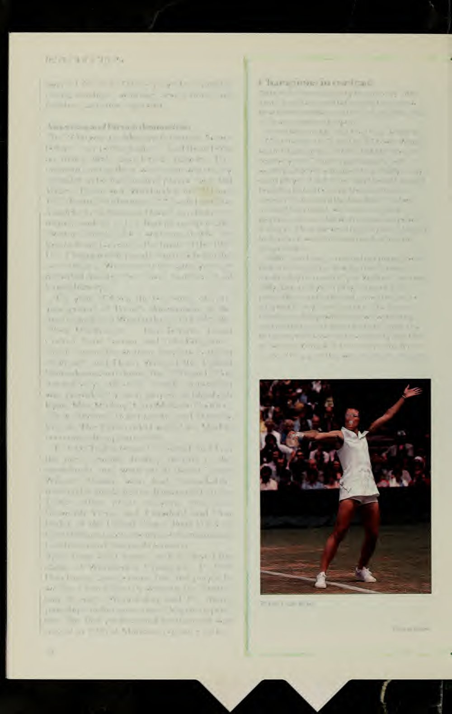
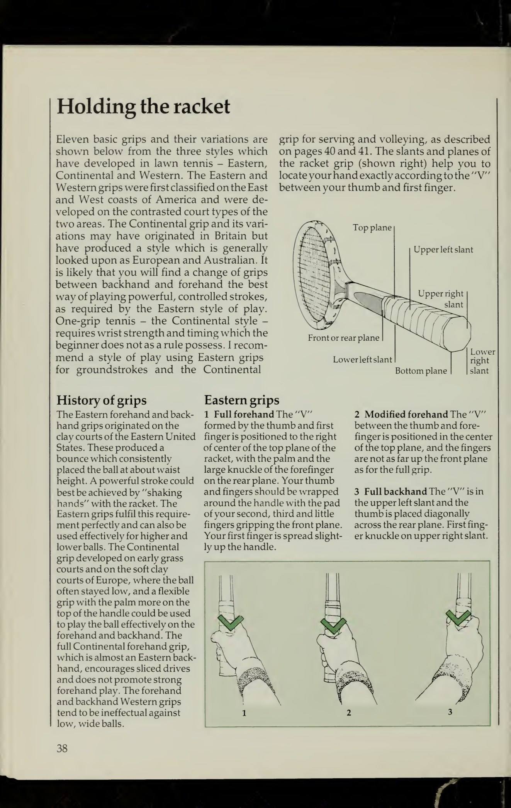
[English: The Octagonal Bevels & Eleven Basic Racket Grips]
Mỗi kiểu cầm vợt mang lại một góc tiếp xúc và khả năng tạo lực hoàn toàn khác nhau. Nắm vững hình học bát giác của cán vợt là bước đi nền tảng đầu tiên:
Kiểu Cầm Continental (Cầm Búa): Khớp ngón trỏ đặt ở cạnh vát số 2. Đây là kiểu cầm đa năng linh hoạt nhất, bắt buộc phải dùng cho quả giao bóng, quả vô-lê trên lưới, quả đập overhead và cú cắt bóng slice.
Kiểu Cầm Eastern Forehand: Khớp ngón trỏ nằm ở cạnh số 3, mang lại mặt vợt tiếp xúc thẳng góc vào sau quả bóng, tối ưu cho những cú đánh bóng phẳng đầy uy lực.
Kiểu Cầm Semi-Western: Khớp ngón trỏ nằm ở cạnh số 4, cho phép người chơi dễ dàng vuốt bóng từ dưới lên để tạo độ xoáy cuộn topspin cực cao mà vẫn duy trì lực phát bóng mạnh mẽ.
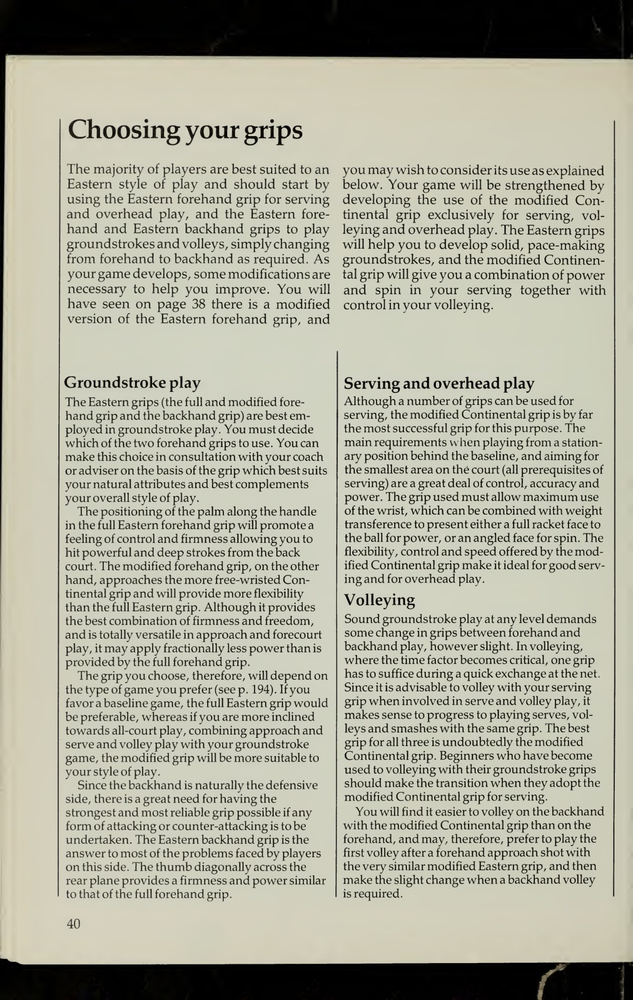
[English: Continental vs Eastern Grip Selection & Impact Angle]
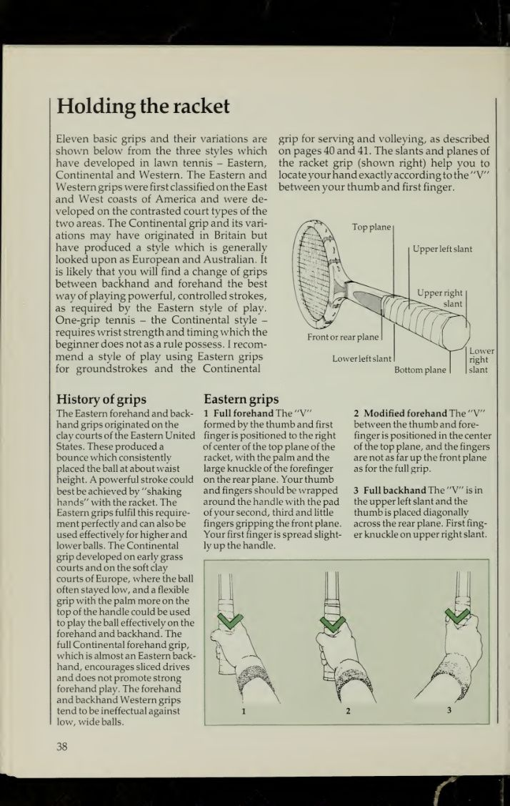
Sơ đồ 1: Các Kiểu Cầm Vợt & Cơ Học Xoáy Bóng — Minh họa chi tiết các cạnh vát bát giác của cán vợt và cơ chế tạo xoáy Topspin, Underspin (Slice) và Sidespin.
Bản Chất Vật Lý Của Các Loại Độ Xoáy (Spin)
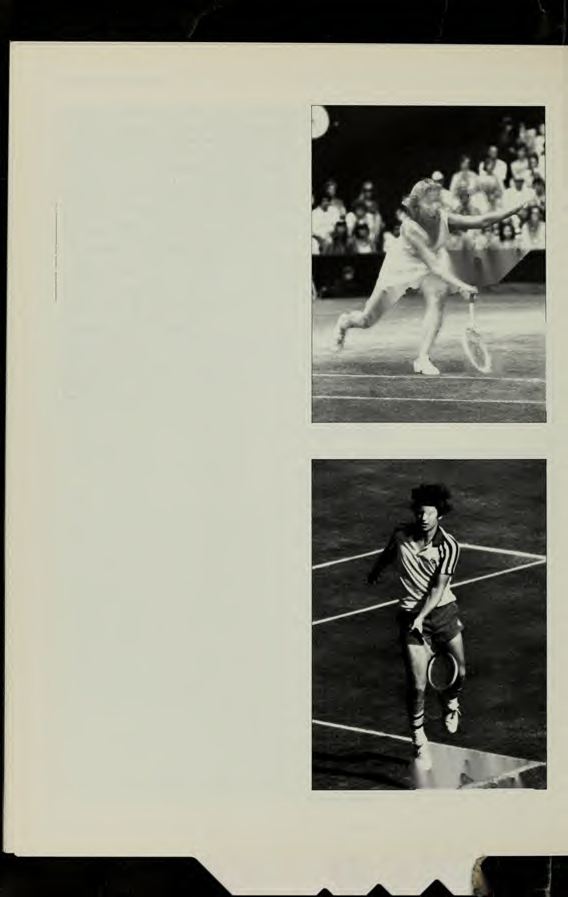
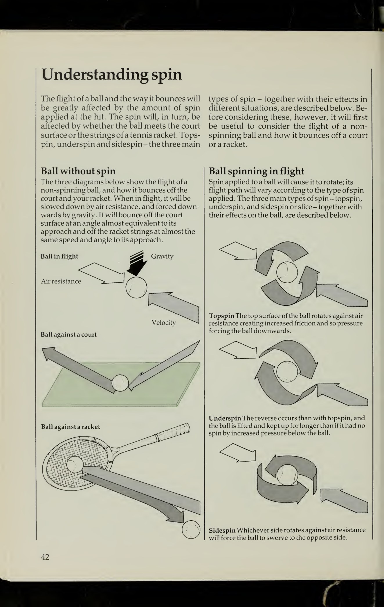
[English: Aerodynamics of Spin: Flight Trajectory & Bounce Profiles]
Hiểu rõ khí động học của trái bóng là bí quyết kiểm soát sân đấu: Xoáy Cuộn (Topspin): Mặt vợt quét từ dưới lên trên qua mặt sau quả bóng. Hiệu ứng Magnus tạo ra một vùng áp suất thấp phía dưới quả bóng, khiến bóng bay vòng cung an toàn qua lưới rồi đột ngột chúc thẳng xuống sân và nảy bốc về phía trước. Xoáy Ngược (Underspin / Slice): Mặt vợt chém từ trên xuống dưới đáy quả bóng. Quả bóng bay lướt là là sát mặt lưới, khi chạm sân sẽ nảy trượt chìm khiến đối thủ rất khó tấn công.
Phần 2: Cú Đánh Thuận Tay (Forehand Drive)
Part 2: The Forehand Drive — Flat, Topspin, Sliced and Double-Handed
Cơ Học Cú Thuận Tay Cơ Bản (Forehand Drive)
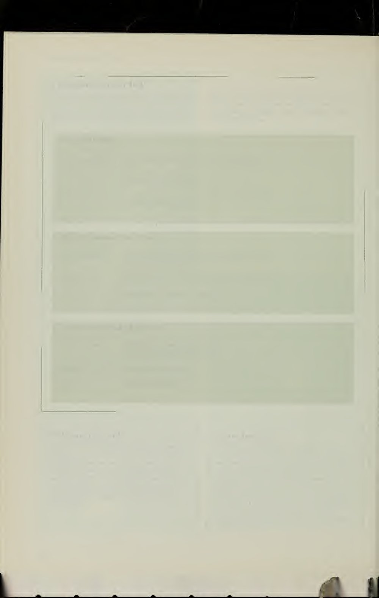
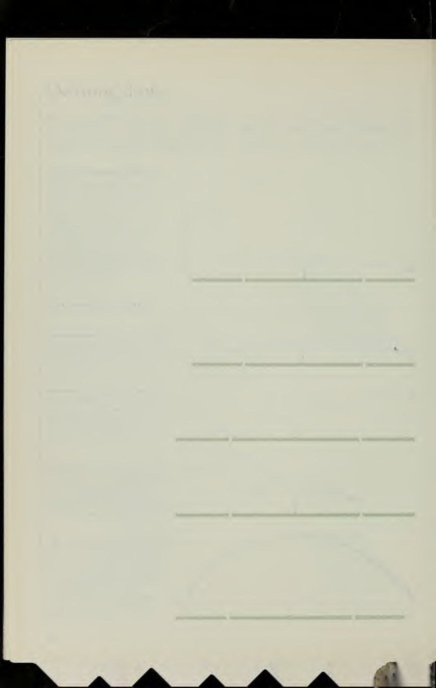
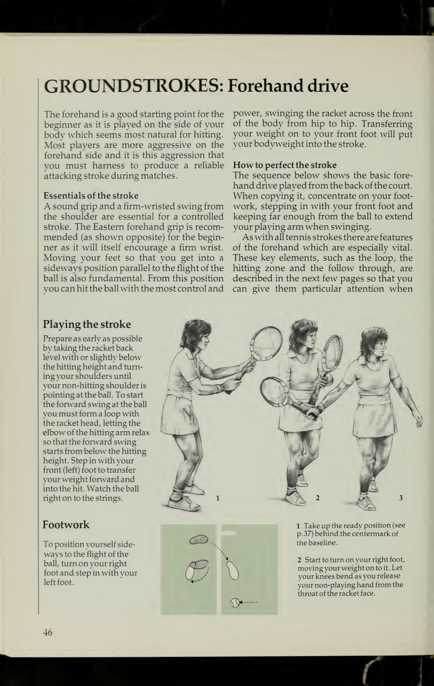
[English: Classical Forehand Drive Kinetic Chain Progression]
Cú thuận tay phẳng là nền móng tấn công uy lực từ vạch đáy sân. Một cú thuận tay hoàn chỉnh đòi hỏi sự phối hợp nhịp nhàng của toàn bộ cơ thể: Giai đoạn Mở vợt: Ngay khi bóng rời vợt đối phương, bạn xoay hông và vai sang bên, đưa vợt về phía sau theo một đường vòng cung mượt mà, trọng tâm dồn lên chân sau. Giai đoạn Tăng tốc đầu vợt: Hạ đầu vợt xuống ngang tầm bóng bay, đạp chân sau truyền lực qua hông xoay và đưa mặt vợt lao thẳng vào tâm điểm của quả bóng ở phía trước hông trước. Giai đoạn Vung theo đà: Cánh tay vung hết biên độ qua vai đối diện, thân người xoay hoàn toàn hướng về phía lưới trong tư thế thăng bằng hoàn hảo.
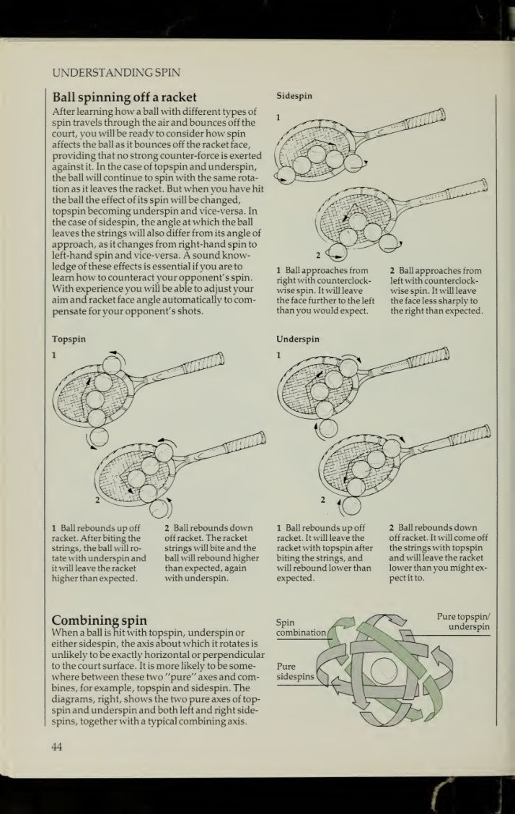
Sơ đồ 2: Chuỗi động học liên hoàn Học Cú Thuận Tay — Phân tích từng pha chuyển động: Chuẩn bị, xoay vai, hạ vợt, tiếp xúc bóng phía trước và vung vợt qua vai.
Biến Thể Cú Thuận Tay Xoáy Cuộn (Topspin Forehand)
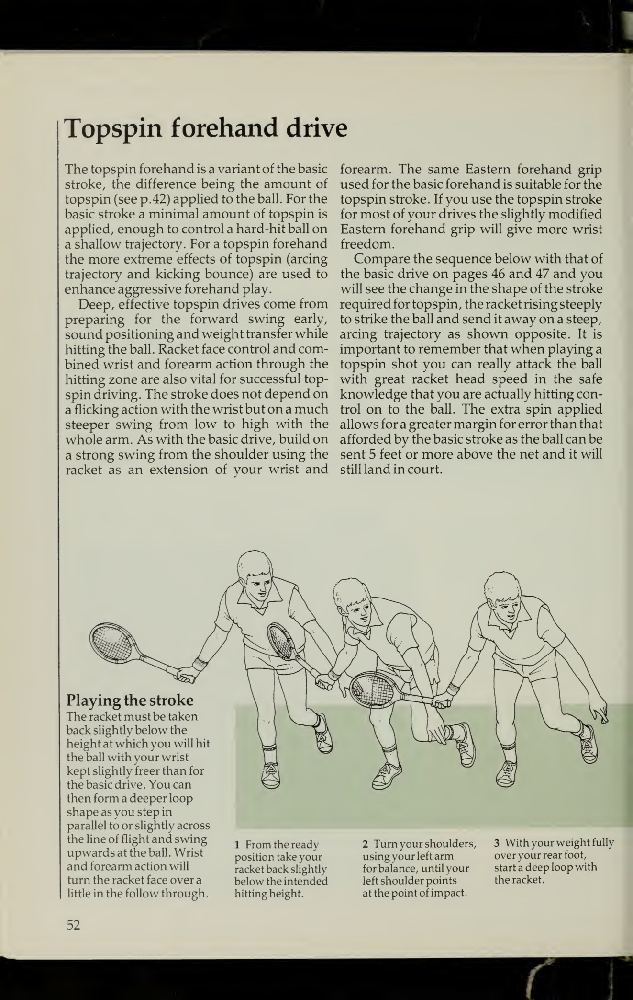
[English: Topspin Forehand Drive & Vertical Racket Brush]
Trong quần vợt hiện đại, cú thuận tay topspin là vũ khí thống trị. Bằng cách sử dụng kiểu cầm Semi-Western và hạ đầu vợt sâu hơn vị trí bóng khoảng 20 đến 30 cm, bạn thực hiện một cú quét vợt dốc ngược từ dưới lên trên. Độ xoáy topspin tạo ra quỹ đạo cầu vồng với biên độ an toàn cực cao qua lưới, cho phép bạn vung vợt với tốc độ tối đa mà bóng vẫn nằm gọn gàng bên trong vạch đáy sân đối phương.
Phần 3: Cú Đánh Trái Tay & Đòn Đánh Tinh Tế
Part 3: The Backhand Drive, Dropshots, and Half-Volleys
Cơ Học Cú Trái Tay Một Tay (One-Handed Backhand Drive)
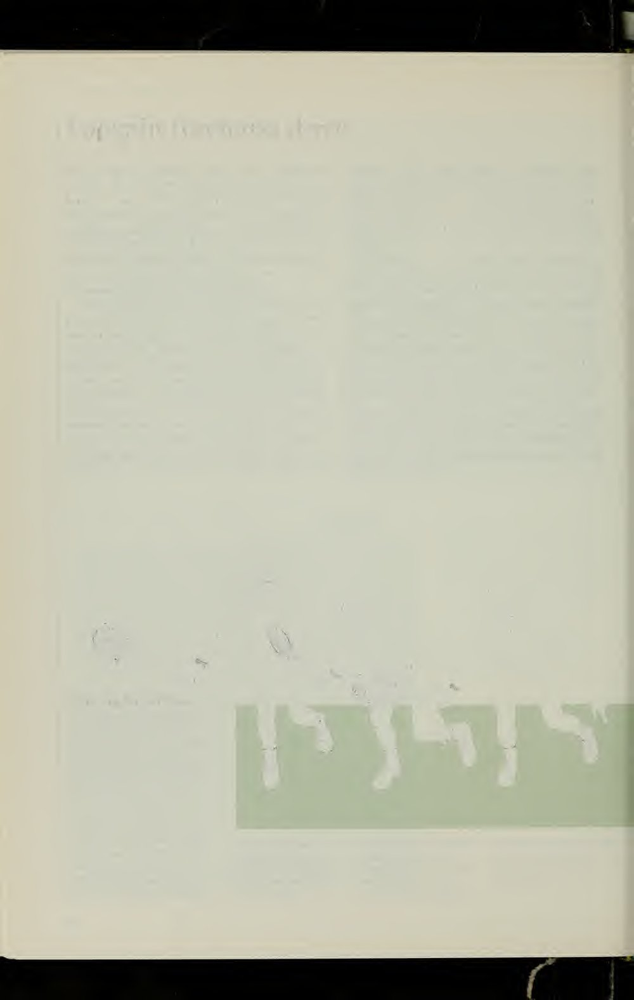
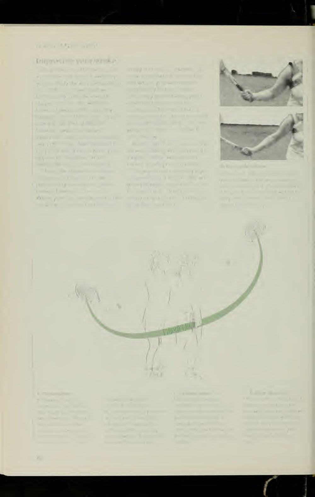
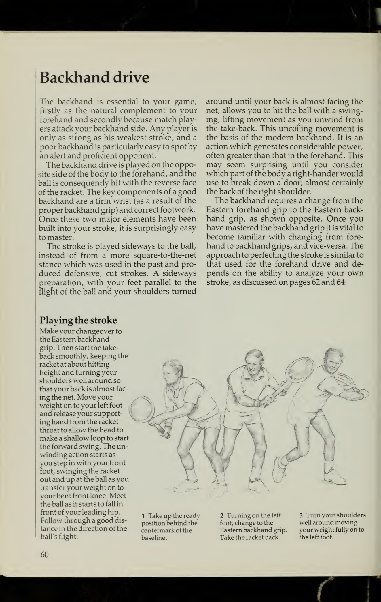
[English: One-Handed Eastern Backhand Coil & Contact Point]
Cú trái tay một tay là biểu tượng của sự thanh thoát và uy lực cổ điển trong quần vợt. Để thực hiện cú đánh này hoàn hảo, tay vợt phải chuyển sang kiểu cầm Eastern Backhand (khớp ngón trỏ đặt ở cạnh số 1). Điểm khác biệt cốt tử so với cú thuận tay là vai thuận phải xoay hoàn toàn ra phía trước, lưng hơi hướng về phía lưới để tạo biên độ vung tay rộng nhất. Điểm tiếp xúc bóng bắt buộc phải nằm ở phía trước đầu gối trước khoảng một gang tay. Cánh tay thẳng và khóa cứng cổ tay khi chạm bóng, sau đó vung mở rộng ngực lên cao theo phương chéo.
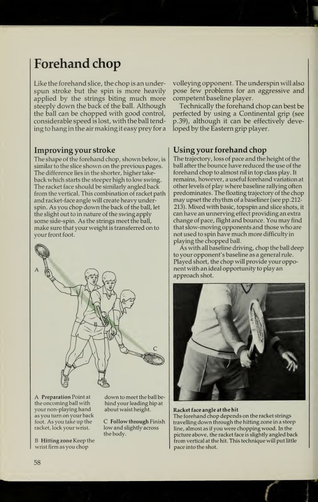
Sơ đồ 3: Kỹ Thuật Cú Trái Tay — Trình tự mở vợt xoay vai hoàn toàn, bước chân khóa trọng tâm, điểm tiếp xúc bóng phía trước và vung vợt mở rộng ngực.
Cú Trái Tay Hai Tay (Double-Handed Backhand)
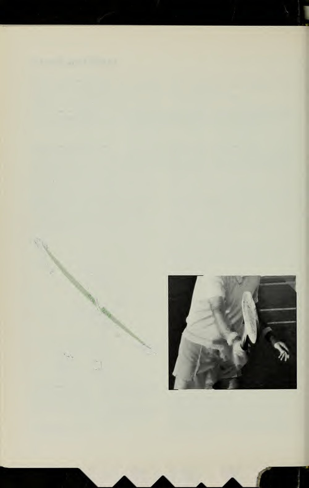
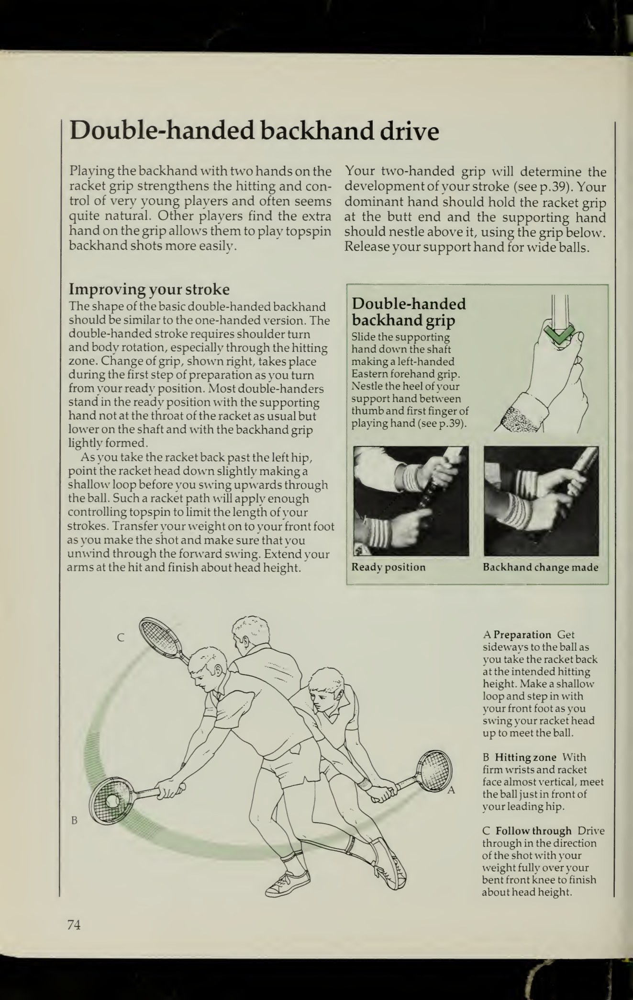
[English: Double-Handed Backhand Leverage & Stability]
Cú trái hai tay mang lại sự chắc chắn và kiểm soát vượt trội, đặc biệt hữu ích khi xử lý các pha bóng nảy cao khó chịu. Bằng việc đặt tay không thuận ở vị trí trên tay thuận, người chơi có thêm một đòn bẩy thứ hai để tăng tốc đầu vợt và truyền toàn bộ lực xoay của hông vào trái bóng. Cú đánh này cho phép người chơi tiếp xúc bóng ở cự ly gần thân người hơn một chút so với cú trái một tay, tạo sự an toàn tối đa trong các pha trả giao bóng tốc độ cao.
Cú Bỏ Nhỏ (Dropshot) Và Cú Nửa Volley (Half-Volley)
Đòn đánh tinh tế là vũ khí làm rối loạn nhịp độ của đối thủ: Cú Bỏ Nhỏ (Dropshot): Đòi hỏi kỹ thuật ngụy trang động tác mở vợt giống như một cú đánh cuối sân thông thường. Đến tích tắc cuối cùng, mặt vợt mở nhẹ và cắt lướt dưới đáy quả bóng với đôi tay mềm mại, khiến bóng chỉ vừa đủ bay qua mép lưới rồi dừng lại trên phần sân đối phương. Cú Nửa Volley (Half-Volley): Là kỹ thuật xúc bóng ngay khoảnh khắc bóng vừa chạm đất nảy lên trong khu vực giữa sân. Cú đánh này đòi hỏi đầu gối phải chùng sâu, giữ mặt vợt ổn định và không bao giờ được đứng thẳng người khi tiếp xúc bóng.
Phần 4: Nghệ Thuật Giao Bóng Đỉnh Cao (The Service)
Part 4: The Service — Flat, Topspin, Slice, and Tactical Placement
Chuỗi động học liên hoàn Học Toàn Thân Của Cú Giao Bóng
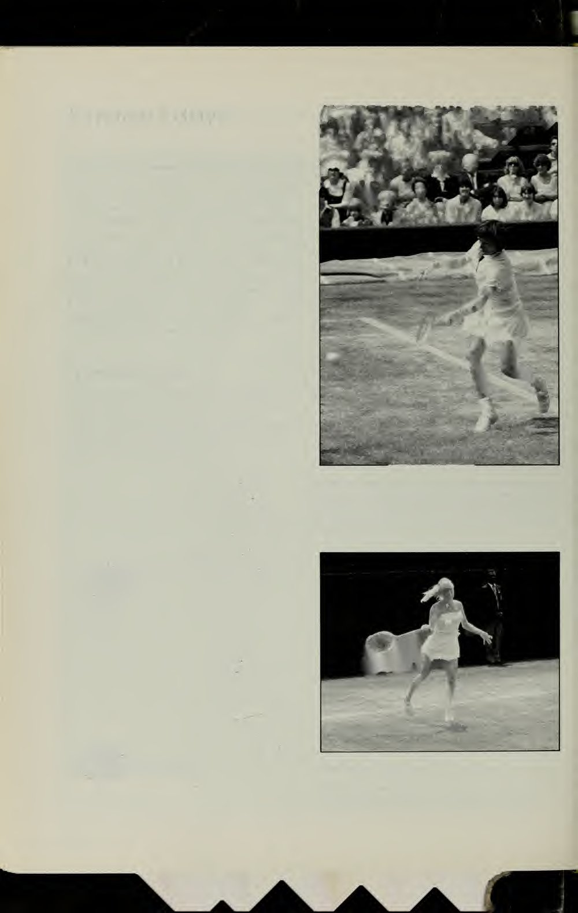
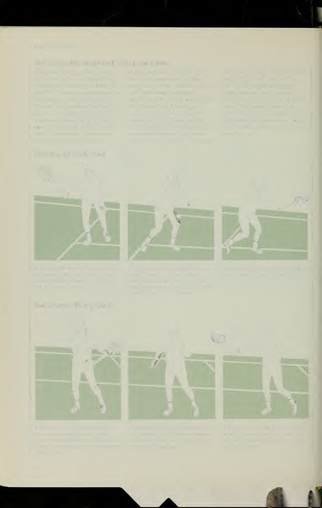
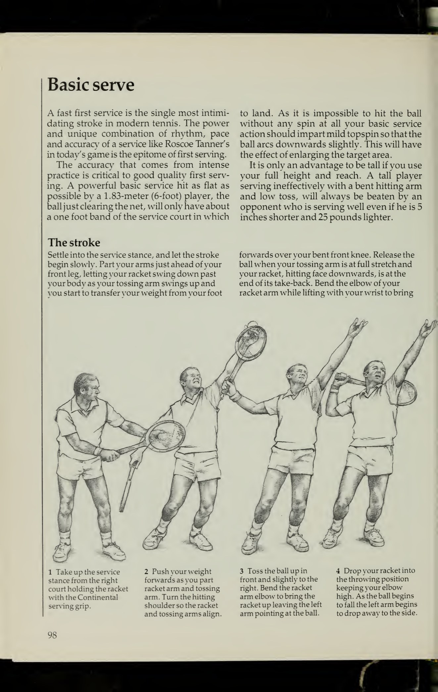
[English: Basic Service Motion, Trophy Pose & Kinetic Sequence]
Giao bóng là cú đánh phức tạp nhất nhưng cũng mang lại lợi thế chủ động lớn nhất trong quần vợt. Đây là một Chuỗi động học liên hoàn học liên hoàn từ mặt đất lên đỉnh vợt: Khởi đầu bằng tư thế đứng thăng bằng vững chắc và cú tung bóng ổn định từ cánh tay thẳng. Người giao bóng hạ thấp trọng tâm, chùng gối nạp lực vào tư thế Cúp Chiến Lợi Phẩm (Trophy Position). Tiếp theo là pha rơi đầu vợt ra sau lưng (Racket Drop) tạo đà vung tối đa. Cơ thể bật mạnh lên không trung, xoay hông và vai vươn thẳng cánh tay tiếp xúc bóng ở điểm cao nhất phía trước trán, quất mạnh cổ tay (Pronation) để tăng tốc độ xoáy trước khi vung vợt qua hông đối diện.
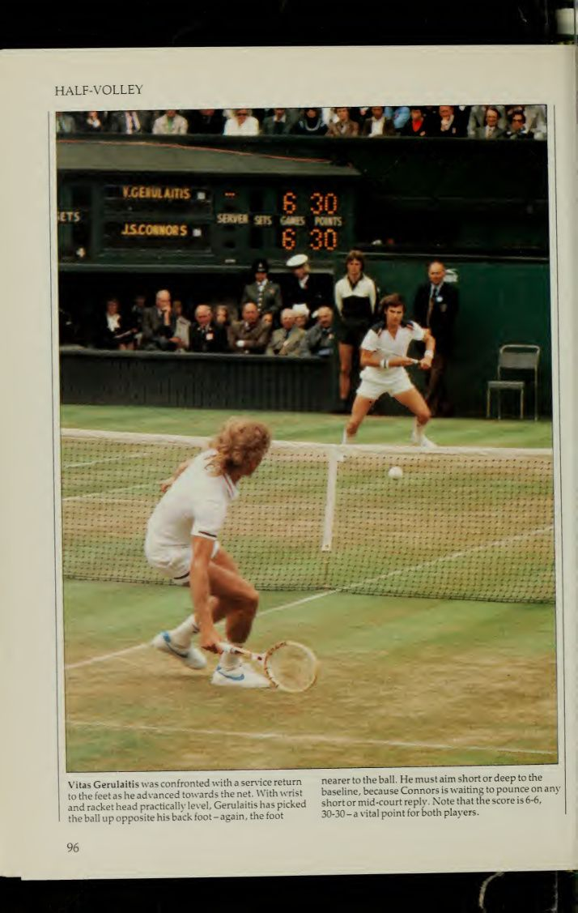
Sơ đồ 4: Chuỗi động học liên hoàn Học Cú Giao Bóng — Toàn bộ quá trình từ tư thế đứng, tung bóng, nạp lực Trophy Pose, bật nhảy tiếp xúc bóng trên cao đến giai đoạn tiếp đất thăng bằng.
Ba Biến Thể Giao Bóng: Phẳng (Flat), Cắt Xoáy (Slice) Và Xoáy Nảy (Kick)
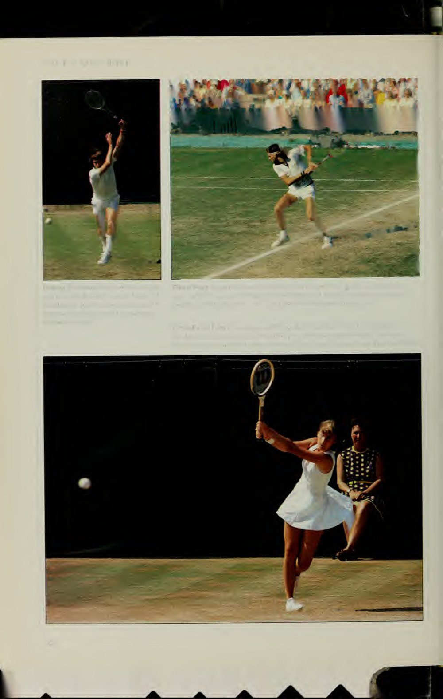
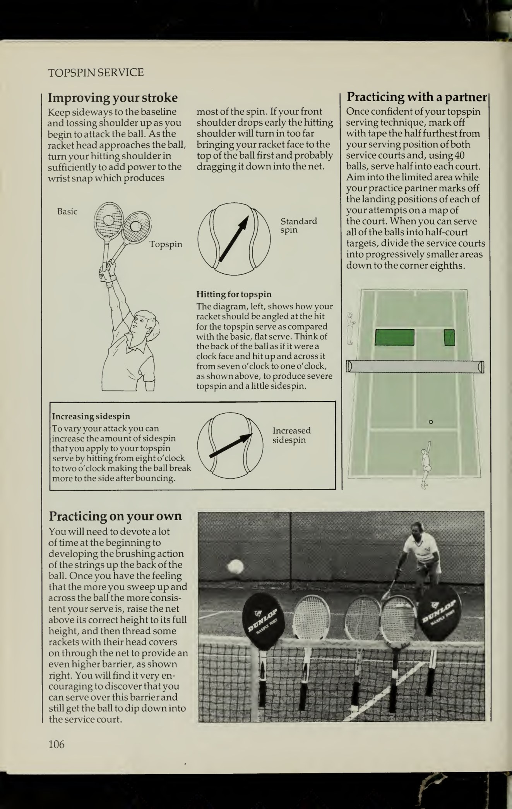
[English: Spin Variations in Service: Flat, Slice & Kick]
Tay vợt thông minh không bao giờ chỉ giao một kiểu bóng đơn điệu: Giao Bóng Phẳng (Flat): Tiếp xúc trực diện vào tâm sau quả bóng, đưa bóng đi với vận tốc tối đa, thích hợp dứt điểm ghi điểm trực tiếp ở quả giao bóng một. Giao Bóng Cắt Xoáy (Slice): Chém vào mặt ngoài bên phải quả bóng, khiến bóng bay lượn vòng và nảy tạt ra ngoài biên sân Deuce, mở toang toàn bộ khoảng sân trống của đối phương. Giao Bóng Xoáy Nảy (Topspin / Kick): Quét mặt vợt từ dưới lên trên qua đỉnh bóng, đưa bóng bay cầu vồng an toàn cao qua lưới rồi cắm sập xuống và nảy bốc cao ngang tầm mắt đối thủ, là vũ khí hoàn hảo cho quả giao bóng hai dưới áp lực lớn.
Phần 5: Thống Trị Khu Vực Lưới (The Volley)
Part 5: The Volley — Forehand, Backhand, Drive, Stop and Drop Volleys
Cầm Vợt Continental Và Kỹ Thuật Đấm Bóng Gọn Gàng
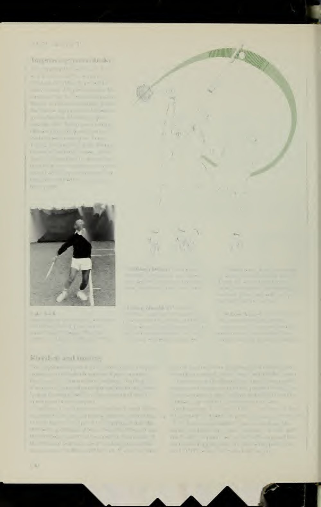
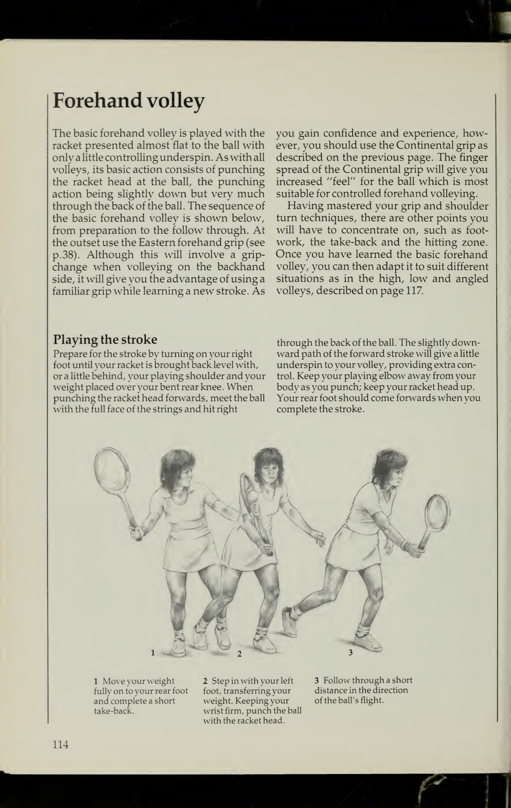
[English: Forehand Volley Punch Mechanics & Minimal Backswing]
Lên lưới là con đường ngắn nhất để kết liễu một điểm số trong quần vợt đỉnh cao. Để làm chủ khu vực này, bạn phải sử dụng kiểu cầm Continental duy nhất cho cả bên thuận lẫn bên trái, giúp loại bỏ hoàn toàn thời gian lãng phí để xoay cán vợt. Cú volley chuẩn xác không bao giờ có động tác vung vợt ra sau (backswing). Mặt vợt luôn ở trước mắt bạn. Khi bóng bay tới, hãy thực hiện một bước đạp chân chéo hướng về phía bóng kết hợp với cú đấm mặt vợt chắc chắn vào quả bóng, mượn chính lực bay của đối thủ để trả bóng đi sâu và cắm xuống sân.
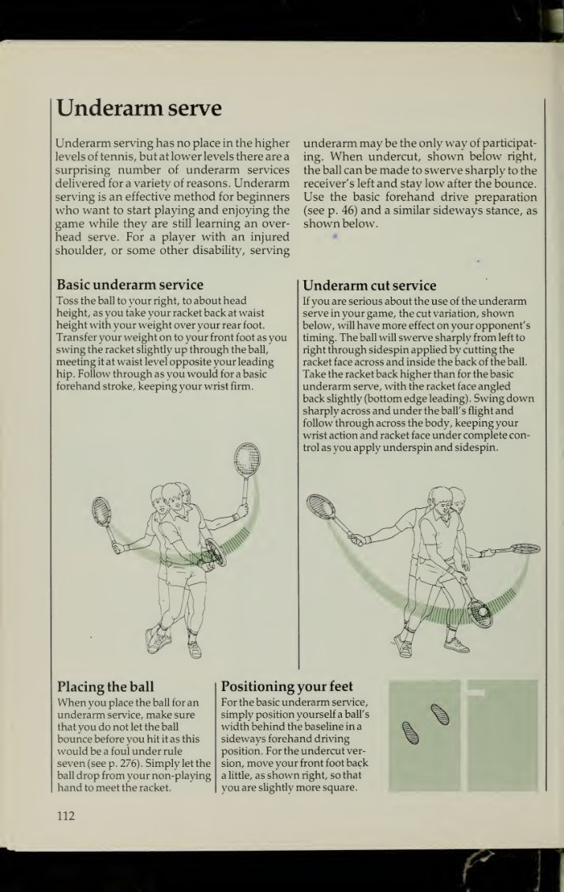
Sơ đồ 5: Kỹ Thuật Volley Lưới — Tư thế chuẩn bị mặt vợt trước ngực, bước đạp chân đón điểm tiếp xúc và góc chặn bóng tinh tế.
Các Biến Thể Volley: Drive Volley, Stop Volley Và Soft Volley
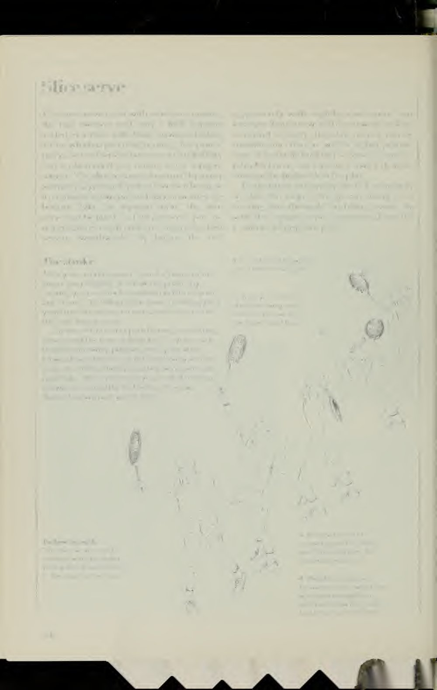
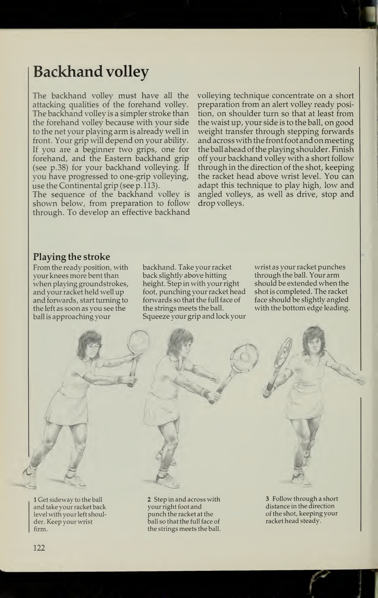
[English: Backhand Volley & Soft Drop Volley Variations]
Một bậc thầy lưới cần sở hữu đầy đủ bộ công cụ: Drive Volley: Cú đánh đón bóng trên không với đà vung vợt đầy đủ như một cú groundstroke, thường được tung ra khi bóng bay lơ lửng giữa sân để ghi điểm kết liễu ngay lập tức. Stop Volley (Drop Volley): Cú volley triệt tiêu lực đánh bằng đôi tay thả lỏng mềm mại, khiến quả bóng rơi lơ lửng sát mép lưới đối phương. Soft Volley: Cú volley góc ngắn đưa bóng tạt chéo sân ra sát mép lưới, vượt khỏi tầm với của bất kỳ đối thủ nào đang đứng ở vạch cuối sân.
Phần 6: Lốp Bóng & Đập Bóng Trên Cao (Lob & Smash)
Part 6: The Art of the Lob and the Power of the Overhead Smash
Các Biến Thể Lốp Bóng: Basic, Topspin Và Underspin
Lốp bóng là nghệ thuật khống chế không gian trên cao của sân đấu. Cú lốp bóng bổng phòng thủ đưa bóng bay lên cao tít giúp bạn tái chiếm vị trí thăng bằng. Trong khi đó, cú lốp bóng xoáy cuộn topspin là một đòn trừng phạt tàn khốc: Bằng động tác vuốt bóng cực nhanh từ dưới lên, bóng vượt qua đầu đối thủ trên lưới rồi cắm phập xuống góc sân phía sau.
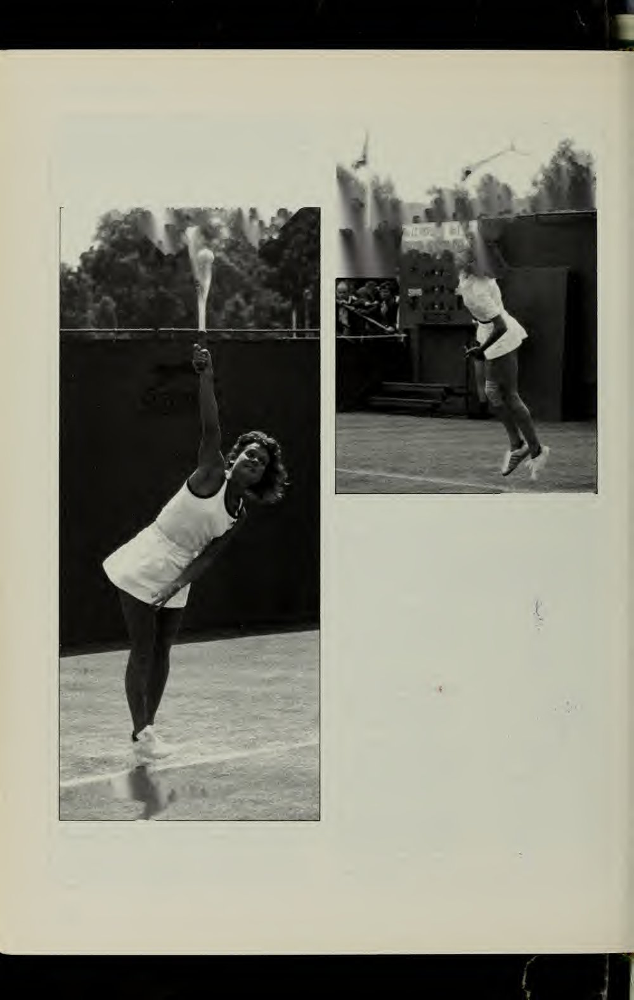
Cú Đập Smash: Basic, Jump Smash Và Backhand Smash
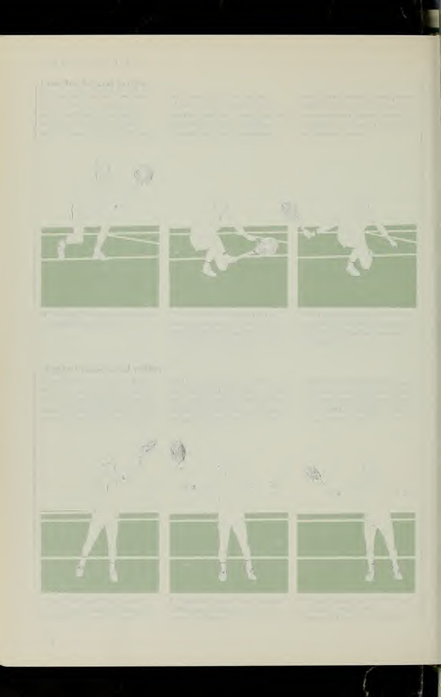
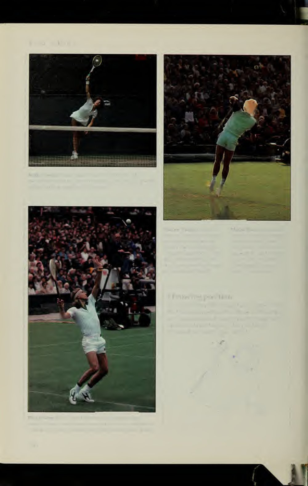
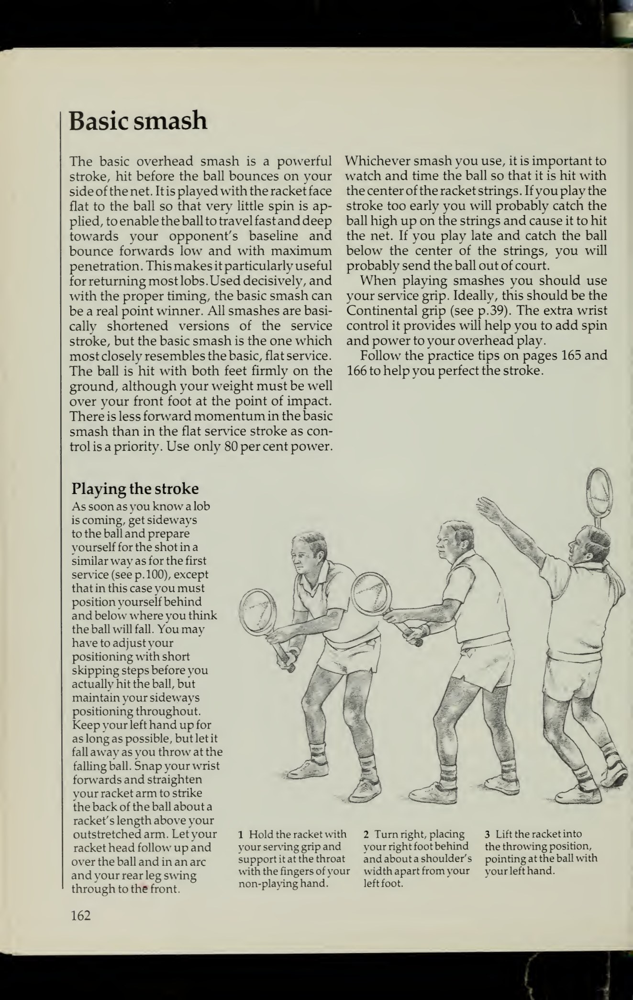
[English: Overhead Smash Execution & Aerial Positioning]
Cú đập smash là dấu chấm hết cho mọi nỗ lực phòng ngự của đối thủ. Hãy xoay nghiêng người ngay lập tức khi bóng bổng xuất hiện, tay không thuận chỉ lên trời, di chuyển lùi bằng bước trượt ngang và bật nhảy vươn người tiếp xúc bóng ở điểm cao nhất. Nếu bạn bị đối phương đẩy bóng qua đầu bên phía trái tay, cú Backhand Smash đòi hỏi kỹ thuật xoay lưng hoàn toàn về phía lưới, vung cánh tay trái tay thẳng lên cao để chặn bóng dứt điểm một cách ngoạn mục.
Phần 7: Chiến Thuật Đánh Đơn Đỉnh Cao
Part 7: Singles Strategy — Geometry, Court Coverage, and Tactical Styles
Hình Học Sân Bãi Và Vị Trí Phân Bổ Tâm Điểm Góc Đánh
Mỗi vị trí quả bóng nằm trên sân đều tạo ra một hình quạt góc đánh phản xạ về phía bạn. Nguyên lý vàng của đánh đơn là: Sau mỗi cú đánh, bạn phải di chuyển về vị trí phân giác của góc hình quạt đó (The Bisector of the Opponent's Angles of Return). Nếu bạn đánh bóng chéo sân sâu về góc phải đối phương, vị trí đứng chờ bóng của bạn phải hơi lệch về phía bên phải so với mốc tâm sân một chút. Nếu bạn đánh bóng dọc dây, bạn phải dịch chuyển sang bên trái. Việc đứng sai vị trí phân giác sẽ để lộ ra khoảng sân trống thênh thang cho đối thủ khai thác.
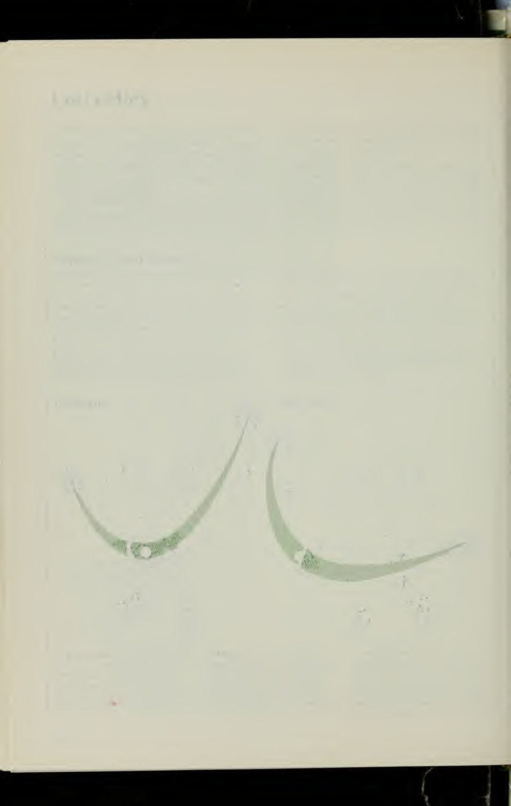
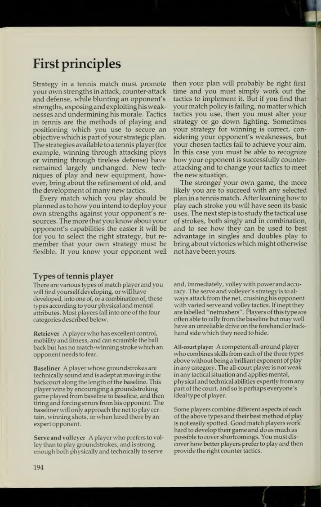
Sơ đồ 7: Hình Học Sân Đơn — Nguyên lý phân giác góc đánh, phân chia các khu vực kiểm soát sân và lộ trình di chuyển phục hồi vị trí sau mỗi cú đánh.
Đối Đầu Các Trường Phái: Giao Bóng Lên Lưới vs Bám Đáy Sân
Để giành chiến thắng trong đánh đơn, bạn phải biết cách khắc chế từng phong cách thi đấu: Khi đối đầu tay vợt chuyên bám đáy sân (Baseliner): Hãy kiên nhẫn đọ bóng bền chéo sân, thay đổi độ cao và độ xoáy bóng, đồng thời sử dụng các cú bỏ nhỏ kéo họ lên lưới nơi họ cảm thấy bất an nhất. Khi đối đầu tay vợt chuyên giao bóng lên lưới (Serve & Volleyer): Hãy tập trung trả bóng cắm sâu xuống chân họ khi họ đang di chuyển dâng lên, hoặc tung ra cú lốp bóng bổng giải tỏa ngay khi họ áp sát mép lưới.
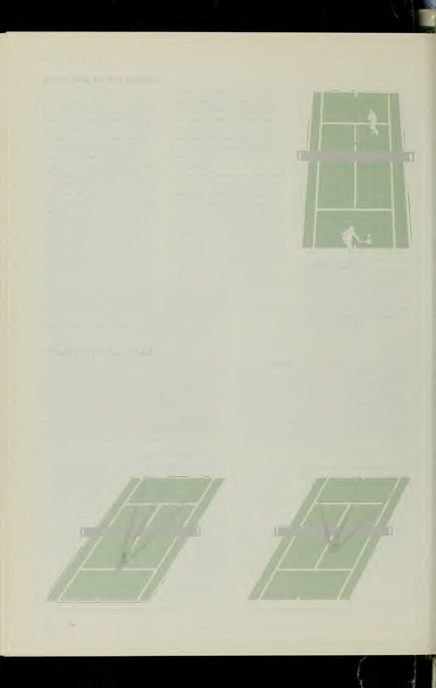
Phần 8: Chiến Thuật Đánh Đôi & Đôi Nam Nữ
Part 8: Doubles Strategy — Team Formations, Court Coverage, and Mixed Play
Nguyên Tắc Làm Chủ Trung Lộ Và Phối Hợp Đồng Bộ
Đánh đôi là trận địa của sự phối hợp tương hỗ. Khác với đánh đơn, trung lộ giữa hai người là mục tiêu tấn công hàng đầu của đối thủ nhằm gây ra sự do dự và va chạm vợt. Một đội đôi ăn ý phải di chuyển như thể được nối với nhau bằng một sợi dây vô hình: Khi người đứng lưới di chuyển áp sát lưới thì người cuối sân phải giữ khoảng cách bọc lót; khi người đứng lưới di chuyển dạt sang phải để bắt bóng thì người đứng sau tự động lùi bước che chắn khoảng sân bên trái.
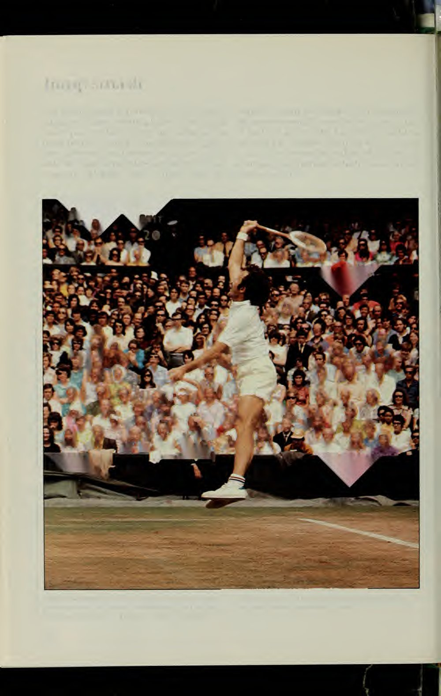
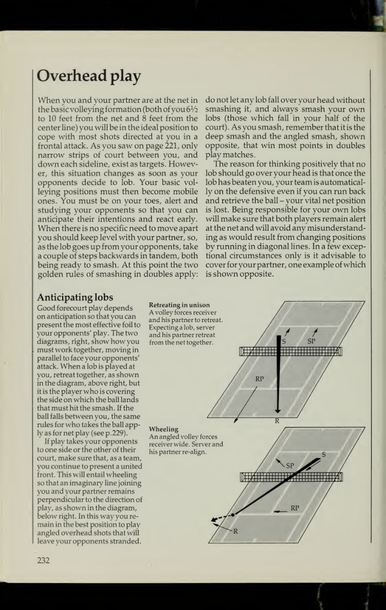
Sơ đồ 8: Bố Trí Đội Hình Đánh Đôi — Các cấu trúc đội hình cơ bản (Một lên một xuống, Hai cùng lên lưới) và phân chia khu vực trách nhiệm bọc lót.
Chiến Thuật Trong Thi Đấu Đôi Nam Nữ (Mixed Doubles)
Trong nội dung đôi nam nữ, chiến thuật đòi hỏi sự tinh tế và phân công vai trò rất chặt chẽ. Tay vợt nam thường đảm nhận trọng trách bao quát khoảng sân rộng hơn và các pha bóng bổng trên cao, trong khi tay vợt nữ giữ vai trò kiểm soát các pha bóng giằng co bền bỉ và chốt chặn phản xạ nhạy bén trên lưới. Chìa khóa chiến thắng trong đôi nam nữ là sự động viên liên tục, nâng đỡ tinh thần và tuyệt đối không bao giờ tạo áp lực tâm lý lên bạn cặp.
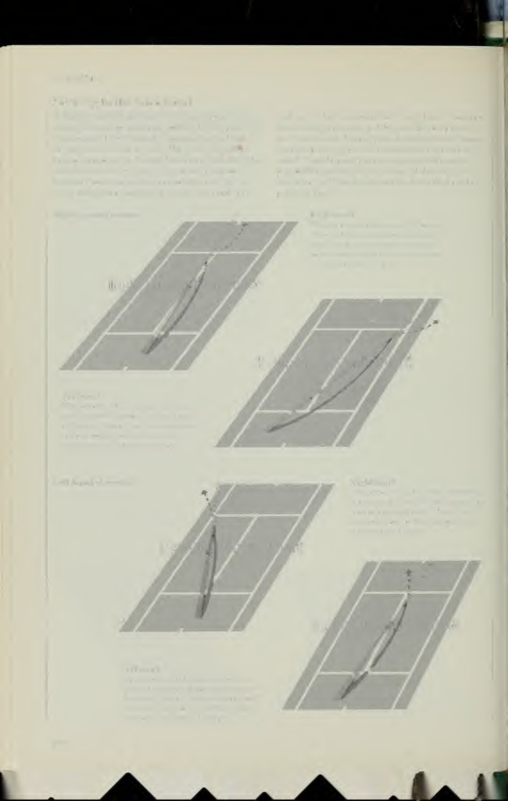
Phần 9: Tâm Lý Chiến Thắng & Thích Ứng Mọi Mặt Sân
Part 9: Winning Psychology and Adapting to Different Court Surfaces
Rèn Luyện Sự Tập Trung Và Bản Lĩnh Dưới Áp Lực
Chiến thắng trong quần vợt không chỉ được định đoạt bởi kỹ năng đánh bóng mà nằm ở bản lĩnh tinh thần. Những tay vợt vĩ đại như John McEnroe hay Bjorn Borg luôn sở hữu khả năng tập trung cao độ ở những điểm số quyết định (Break Point hay Match Point). Hãy xây dựng thói quen giữa các điểm số: Hít thở sâu, lau mồ hôi, điều chỉnh dây vợt và tự nhủ một kế hoạch tác chiến rõ ràng trước khi giao hoặc trả bóng. Đừng bao giờ dằn vặt vì một lỗi đánh hỏng vừa qua mà hãy luôn hướng tâm trí vào điểm số tiếp theo.
Thích Nghi Với Từng Mặt Sân: Đất Nện, Sân Cỏ Và Sân Cứng
Mỗi mặt sân đòi hỏi một chiến thuật thích ứng riêng biệt: Sân Đất Nện (Clay Court): Bóng nảy chậm và cao, đòi hỏi thể lực phi thường, sự kiên nhẫn trong các pha bóng bền và cú đánh có độ xoáy topspin lớn để đẩy lùi đối thủ. Sân Cỏ (Grass Court): Bóng nảy rất nhanh và thấp trượt trên mặt cỏ, là thiên đường cho lối chơi giao bóng lên lưới (Serve and Volley) và các cú cắt bóng slice hiểm hóc. Sân Cứng (Hard Court): Độ nảy chuẩn mực và trung bình, đòi hỏi một lối chơi toàn diện, khả năng chuyển đổi linh hoạt giữa tấn công uy lực và phòng ngự bền bỉ.
Phần 10: Thể Lực, Dinh Dưỡng & Phòng Ngừa Chấn Thương
Part 10: Physical Conditioning and Preventing Tennis Injuries
Rèn Luyện Sức Bền, Tốc Độ Và Khả Năng Linh Hoạt
Quần vợt hiện đại đòi hỏi sự kết hợp toàn diện giữa sức bền hiếu khí (để thi đấu liên tục trong nhiều giờ) và sức mạnh yếm khí bùng nổ (cho những bước chạy nước rút cứu bóng). Hãy kết hợp các bài tập chạy biến tốc (Interval Sprint), bài tập plyometrics bật nhảy tăng sức mạnh bộc phát của đôi chân, và các bài tập tăng cường cơ lõi bụng lưng (Core Training) để bảo vệ cột sống và truyền lực tối đa vào từng cú đánh.
Phòng Tránh Và Điều Trị Viêm Khớp Khuỷu Tay (Tennis Elbow)
Chấn thương viêm điểm bám gân lồi cầu ngoài xương cánh tay (Tennis Elbow) là nỗi ám ảnh của người chơi quần vợt. Nguyên nhân chính thường xuất phát từ việc tiếp xúc bóng muộn ở cú trái tay, Động tác sấp cổ tay / xoay trong cẳng tay khi đánh bóng hoặc sử dụng vợt quá nặng và dây căng quá cứng. Để phòng ngừa, hãy luôn tiếp xúc bóng ở phía trước thân người, sử dụng lực xoay của toàn bộ cơ thể thay vì chỉ dùng cơ cẳng tay. Khi có dấu hiệu đau nhức, hãy lập tức chườm đá, nghỉ ngơi hợp lý và thực hiện các bài tập kéo giãn tăng cường sức mạnh nhóm cơ duỗi cổ tay.